Central Africa covers a large physical area that can range from desert conditions to the north in Chad to tropical rain forests and mountains in the equatorial region of The Congo. The entire region is roughly the same size as the United States west of the Mississippi River. The countries included in the region vary with different organizations or geographic perspectives; in this textbook, the countries include Cameroon, Congo, Chad, the Central African Republic, Gabon, Equatorial Guinea, the Congo (Zaire), Rwanda, and Burundi. Located off the west coast of Central Africa is the small twin island country of São Tomé and Príncipe. Burundi and Rwanda are often included in the region of East Africa, but their connection to the Congo makes them more relevant to the Central African region for the purposes of this textbook.
The equator runs through the middle of Central Africa. Type A climates are dominant in the region, complete with tropical rain forests and jungle environments. In the north is the African Transition Zone, which runs through Chad. In Chad, the arid region of the Sahara Desert transitions into the humid tropics. Central Africa usually only includes portions of Subsaharan Africa south of the African Transition Zone. Southern Chad exhibits qualities similar to Central Africa, and the northern areas exhibit qualities similar to North Africa or the northern regions of Niger, Mali, or Mauritania.
The physical geography varies with each country in Central Africa. The most prominent physical landscape is the tropical rain forests of the equatorial region. Highlands can be found in both the western and eastern regions of Central Africa. The Cameroon Highlands are a product of a geologic rift in tectonic plates that created São Tomé and Príncipe, the island portion of Equatorial Guinea, and the mountainous portions of the mainland on the border between Nigeria and Cameroon. There are a number of volcanoes in Cameroon. The only currently active volcano and the highest in elevation is Mt. Cameroon, at more than thirteen thousand feet. Mt. Cameroon emitted a cloud of carbon dioxide in 1986, killing more than 1,700 people. The volcano last erupted in 2000. In the crater of one of the volcanic peaks is Lake Nyos.“Mount Cameroon,” http://www.cameroonconsul.com/mount.html; “Mt Cameroon Volcano—John Seach,” Volcano Live, http://www.volcanolive.com/mtcameroon.html.
Lake Chad in the north is a large, shallow body of water that lies on the border of Chad, Niger, Nigeria, and Cameroon. The size of Lake Chad varies widely because it expands and contracts with the seasonal variations in precipitation. Lake Chad provides water for local livestock and fishing for millions of people. Its location on the border of four countries has caused political infighting over local water rights, which are valuable commodities in such an arid climate. The average depth of Lake Chad ranges from five to thirty five feet. Climatic conditions and diversion of the lake for human purposes have caused the water to recede. If these conditions continue, the lake might virtually disappear by the end of the twenty-first century, which would have disastrous effects on both the human population around the lake and the biodiversity. Waterfowl, crocodiles, fish, and a host of other creatures depend on Lake Chad for their survival, and its loss would create an environmental catastrophe.
Figure 7.27 Central Africa
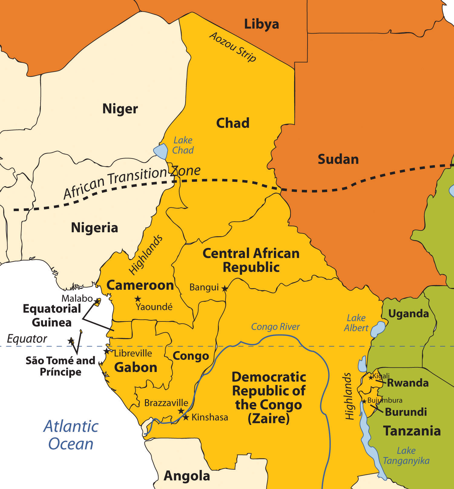Chad is often included in other regions, but in this text it is included with Central Africa. The Congo River is the main river of this region.
Source: Updated from map courtesy of University of Texas Libraries, http://www.lib.utexas.edu/maps/africa/txu-oclc-238859671-africa_pol_2008.jpg.
On the eastern border of the Congo is a portion of the Great Rift Valley, which extends from Southern Africa in Mozambique to Lebanon in the Middle East. Lake Tanganyika and Lake Albert are two of the larger lakes in Central Africa along the western section of the Great Rift Valley. Lake Tanganyika is more than 418 miles long and runs the entire length of the boundary between the Congo and Tanzania. These are deepwater lakes. Lake Tanganyika is the world’s second-deepest lake, with a depth of 4,800 feet. Because of its depth, it is also the world’s second-largest lake by volume after Lake Baikal in Russia, which has the record for both volume and depth.
Fish and fresh water from Lake Tanganyika support millions of people who make their living directly from the lake’s resources or who live in the surrounding area. The Great Rift Valley is bordered by high mountains such as the Rwenzori Range and its highlands, which include active volcanoes. A number of volcanoes are located in the Congo, not far from the border with Rwanda. In 2002, Mt. Nyiragongo, a volcano with an elevation of 11,358 feet in the eastern highlands of the Congo, experienced a series of eruptions that killed a few dozen people, destroyed thousands of buildings, and caused the evacuation of as many as four hundred thousand people. Various volcanoes in this range have active lava lakes in their craters at their peaks.
At the heart of Central Africa are the massive Congo River and all its tributaries. It is the deepest river system in the world and has some stretches that run more than seven hundred feet deep, providing habitats for a wide range of organisms and fish species. The Congo River basin is second only to the size of the Amazon basin in South America. Home to Africa’s largest tropical rain forest, this region is host to a massive variety of plant and animal species, which create an extensive environmental resource base. Human activity has been encroaching on this valuable environmental region filled with extensive biodiversity. Logging, slash-and-burn agriculture, and civil war have devastated large areas of the Congo basin, resulting in the loss of habitat for many tropical species.
Figure 7.28 Living on the Edge
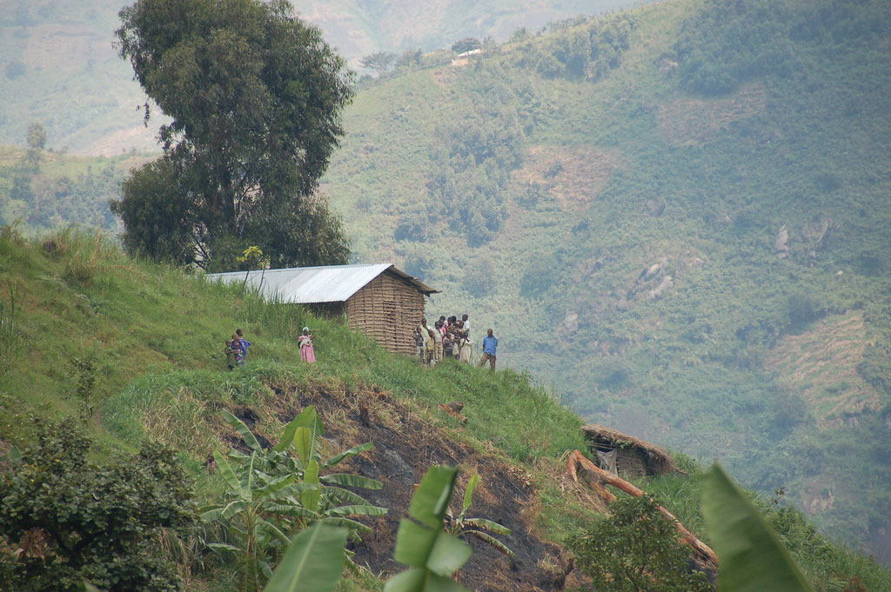This mountainside home is located in the Rwenzori Mountain range in the eastern region of the Congo. Elevations can reach as high as 16,761 feet. Some peaks are snow-capped with permanent glaciers.
Source: Photo courtesy of Dylan Walters, http://www.flickr.com/photos/50169083@N00/1204360972.
Deforestation activities have been on the rise in Central Africa and the Congo basin. Endangered primates such as chimpanzees and gorillas, along with monkeys and game animals, have struggled to adjust to the shrinkage of their habitat and the decline of their population. The endangered mountain gorillas in the northern region of the highlands have gained attention through the efforts of professional scientists such as Dian Fossey who have attempted to understand and preserve their ecosystems. Mountain gorillas have been dwindling in numbers because of poaching, civil war, and hunting. It will take concerted preservation activities for gorillas to survive in their native habitat.
The two landlocked countries of Chad and the Central African Republic have endured unstable conditions in their transitions to independent, stable democratic states. Chad had been in dispute with Libya over the Aozou Strip bordering their two countries, an area deemed rich in minerals and uranium, but in 1994, Chad was awarded sovereignty over the Aozou Strip by the United Nations (UN) International Court of Justice. Chad is a temporary home of more than 250,000 refugees from the ethnic cleansing campaign in the Darfur region of the Sudan. Thousands more from the Central African Republic have sought refuge in Chad. Meanwhile, Chad’s government has been plagued with corruption and mismanagement, a state of affairs that has hampered its efforts to offer humanitarian aid to its refugees. Similarly, the Central African Republic is troubled by a history of unstable and short-lived democratic governments. Military coups and transitional governments are frequent. Civil unrest erupts into chaos. Rebel groups control large parts of the countryside. It is difficult for the people to access reliable public services such as health care, education, and transportation systems when the government is not functioning adequately.
Figure 7.29 A Tailor in Chad
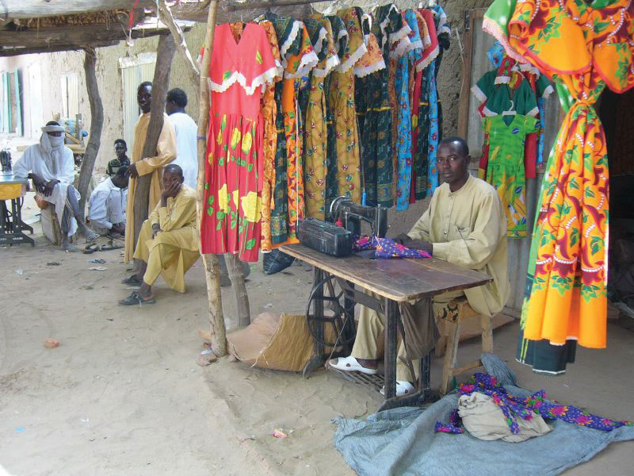Chad is a poor country with existing political conflicts and many refugees from Sudan. The man in this photo is using an old manual sewing machine to make clothes.
Source: Photo courtesy of Mark Knobil, http://www.flickr.com/photos/36448457@N00/66825084.
Cameroon and Gabon have more stable governments than Chad or the Central African Republic. Still, they are not without political issues. Cameroon was a German colony as a result of the Berlin Conference of 1884 where the colonial European countries divided up Africa. It remained so until after World War I, when it was divided between the British and the French. Finally, in 1961, the two sides were merged into one country under one government. The two hundred or so different ethnic groups place pressure on the government to address social concerns. Even though the government has become stable more recently, social pressures between traditional groups and groups with a European colonial background have erupted into social unrest. The European Anglo factions have gone so far as to threaten to separate the once-British portion and secede from Cameroon.
Formerly a French colony, Gabon has transitioned to independence successfully. The country’s small population of about 1.5 million people, along with adequate natural resources, has facilitated Gabon’s development into a country with a relatively stable democratic government and a higher standard of living. Gabon is geared toward attracting more foreign investments and continues to progress forward in the index of economic development. As of 2010, Gabon was edging toward stage 3, the highest level in Central Africa for a country as a whole.
Equatorial Guinea and the island nation of São Tomé and Príncipe are small countries on the west coast of Central Africa. Serious violence erupted in the former Spanish colony of Equatorial Guinea after it gained independence in 1968. The first elected president governed through authoritarian rule, and after a few years in office, he unleashed a reign of terror that resulted in the death of more than one-third of the population and totally neglected the country’s public service sector and infrastructure. He was overthrown and executed by his successor, who then implemented authoritarian measures to make sure he would remain in power and continue to control all the revenues from the extensive oil activity in the offshore waters around his country. The billions in oil revenues have remained in the hands of the president and his family-controlled cabinet. Equatorial Guinea is Subsaharan Africa’s third-largest oil exporter; however, most of the country’s citizens have benefited little from the vast wealth of the lucrative oil industry.
Figure 7.30 Cultural Artifacts
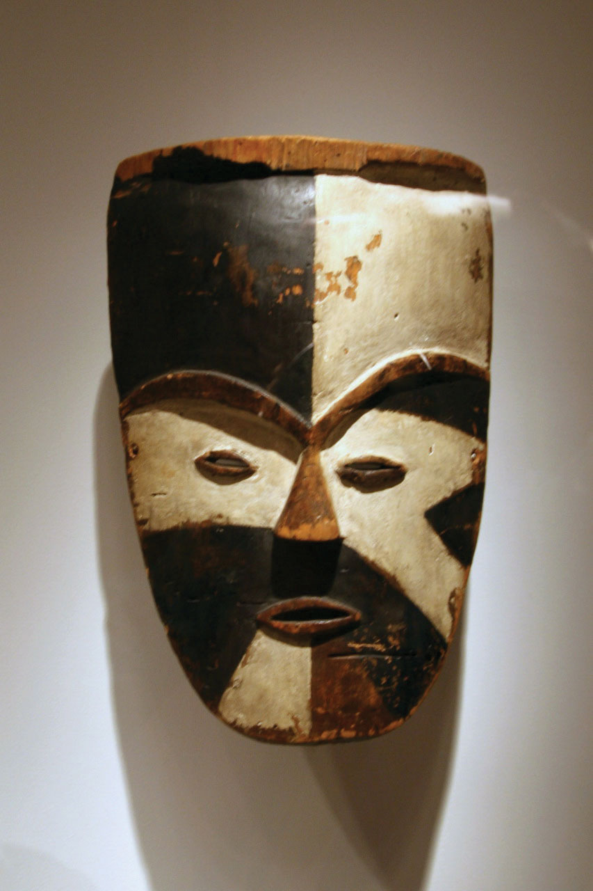A mask from Gabon, in the Ogowe River region, made by the Tsogo people. The mask, made in the late nineteenth to early twentieth century, is made out of wood with natural pigments. Masks are a common part of cultural rituals or festival events.
Source: Photo courtesy of cliff1066™, http://www.flickr.com/photos/nostri-imago/2923626512.
The former Portuguese colony of São Tomé and Príncipe consists of two small islands off the coast of Gabon. The islands received their independence in 1975, but that’s when their problems in establishing a stable government began. Political turmoil delayed the arrival of democratic reforms for a decade. Elections for leadership were not held until 1991, and after the elections, leadership changed repeatedly because of political infighting. In 1995 and 2003, two coups were attempted without success. The democratic process has been complicated by offshore oil discovery, which has brought an influx of outside workers and media attention to the country. Multinational oil companies have begun to invest heavily in the development of oil production in the region.
Rwanda has been severely affected by the difficulties typically associated with the transition between colony and independent nation. Ethnic divisions manipulated by the colonial masters erupted to challenge the country’s stability and future. The division between the Tutsis and the Hutus has deep historic roots. In 1994, the centuries-old conflict between the two ethnic groups erupted into violence of unprecedented proportions and resulted in the senseless killing of hundreds of thousands of innocent people. The Hutus amassed large militias and took revenge on the Tutsis for years of oppression. Hutu militias rounded up and killed all Tutsis, moderates, and anyone not supporting the Hutu cause. The killing of hundreds of thousands of people continued from city to city throughout the countryside. Within a few months, the genocide is estimated to have caused the death of as many as a million people.
The atrocities of the Rwandan genocide extended across the population. Men, women, and children were encouraged to kill their neighbors by hacking them to death with machetes. If they refused to comply, they themselves were threatened with death. Victims were herded into schools and churches, where they were massacred and the buildings would be burned to the ground. As people fled the region, the number of Tutsi refugees entering neighboring countries ballooned to more than a million.
Figure 7.31 Refugee Camp
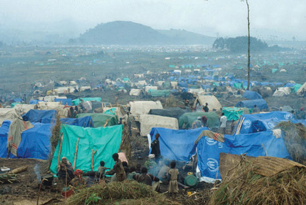An estimated 1.2 million Rwandan refugees fled to the Congo (Zaire) after a civil war erupted in Rwanda. Many are still in the Kibumba refugee camp, shown here covered a smoky haze.
Source: Photo courtesy of the CDC, http://commons.wikimedia.org/wiki/File:Rwandan_refugee_camp_in_east_Zaire.jpg.
Tutsi rebels finally gained strength, defeated the Hutu militias, and ended the slaughter. Fearing retribution for the more than one million Tutsis who had been massacred, more than a million defeated Hutus fled as refugees across the borders into Uganda, Burundi, the Congo, Uganda, and Tanzania. Refugee camps housing thousands of people each were hastily constructed without proper sanitation or supplies of drinking water. Diseases such as cholera and dysentery swept through the camps and killed thousands of refugees. The country of Rwanda was left divided and devastated.
The aftermath of the genocide and conflict continues to incite civil unrest and political division in Rwanda. The search for common ground between the different ethnic groups is divisive and conflict ridden. Now Tutsi leaders dominate the Rwandan government.
The entire Central African region was devastated by the massive shifts of refugees and the brutal killing of so many people. The competition for the control of resources and the increase in military arms along the Zairian border became a major component of the civil war that plagued the Congo (Zaire) during the same period. Up to five million people died in the Congo because of warfare, disease, and starvation. The wars in the Congo involved military actions by the Tutsis from the Rwandan and Ugandan governments and Hutu militias.
The small country of Burundi also has been caught up in the conflicts in Rwanda and the Congo. Germany claimed the region of Burundi as a colony in the European scramble for Africa’s resources. After World War I, they handed Burundi over to Belgium. Burundi and Rwanda were both part of Belgium’s African colonial empire and were together called Ruanda-Urundi. The two countries were later separated. Burundi achieved independence in 1962. Unfortunately, the ethnic conflict between the Hutus and the Tutsis that tore apart Rwanda in the genocidal war in 1994 had also plagued Burundi. In 1965, the military was controlled by Tutsi leadership. When the Hutus revolted, they were repressed. The entire government came under Tutsi control. Hutu attacks in 1972 resulted in a systematic retaliation by the Tutsis that killed approximately 200,000 Hutus and forced another 150,000 to flee the country. Civil unrest between these two groups continues to plague the political and social structures of Burundi.
The names of the Democratic Republic of the Congo (a former Belgian colony) and the Republic of the Congo (a former French colony) are confusing. At one point after they had become independent, both countries chose the name Republic of Congo. To keep them straight, they were commonly referred to by their respective capital cities—that is, Congo-Leopoldville (the larger eastern country, also known as Zaire) and Congo-Brazzaville (the smaller western country). The larger former Belgian colony has since become simply The Congo or is referred to unofficially as the Belgian Congo, and the smaller former French colony has become Congo. In 1966, Joseph Mobutu, the political leader of the Congo, officially changed the nation’s name to Democratic Republic of the Congo. In 1971, the name was changed to the Republic of Zaire. In 1997, after a bitter civil war and the overthrow of Mobutu, the new president, Laurent Kabila, changed Zaire back to the Democratic Republic of the Congo, often referred to as the Congo. To keep the two names separate, many refer to the Congo as Congo-Zaire.
The confusing name situation exemplifies the difficulties and changes in government leadership that have transpired since colonial times in the two countries. The former French colony to the west side of the Congo River has survived with fewer conflicts than its eastern neighbor but has not escaped civil war. From 1997 to 1999, Congo had a harsh civil war, and the end result was the overthrow of a democratically elected president and the installation of a former president. Tens of thousands are reported to have been killed. Related conflicts erupted in various regions that extended into 2003 before they were finally resolved.
The former Belgian colony of The Congo is nearly as large as the United States east of the Mississippi River and is a challenge to govern. The population—distributed between about 250 different ethnic groups and about as many languages—was estimated at about seventy million in 2010. Authoritarian rule from political leaders such as Mobutu from 1965 to 1997 polarized the country’s many factions and played world leaders against each other. The Congo acted as a swing state in the Cold War between the United States and the Soviet Union. As mentioned, Mobutu changed the name of the country and pillaged the country’s finances for personal gain. He stashed away for himself billions of dollars in public funds in foreign bank accounts that should have been spent on the people of the country.
The two wars in The Congo has resulted in the highest number of deaths since World War II. The First Congo War (1996 to 1997) occurred when President Mobutu was overthrown by militant forces led by rebel leader Kabila, who was a long-standing political opponent of Mobutu and was backed by Ugandan and Rwandan militant groups. Mobutu was eventually forced from office and fled the country. Kabila declared himself president and changed the official title of the country from Zaire back to Democratic Republic of the Congo. This transition in political power caused a shift in the militant rebel groups, which created the conditions for the Second Congo War (1998 to 2003), which was even more brutal than the first. The assassination of President Kabila in 2001 permitted his adopted son Joseph Kabila to take power and run the country up to the present.
Figure 7.32 Soldiers in The Congo
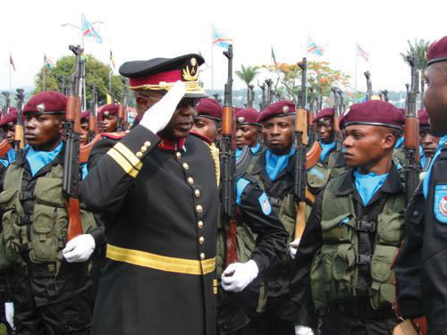In this photo, General Kisempia, former chief of staff for Joseph Kabila, inspects his troops. About five million people died in warfare in the Congo 1996–2003.
Source: Photo courtesy of Themalau http://commons.wikimedia.org/wiki/File:Kisempia.jpg.
The Second Congo War raged through the Congo, bringing destruction to the country and the deaths of millions of people. Besides political control of the country, a main objective of the combatants was to dominate the resource-rich eastern sector of the country, where valuable reserves of zinc, diamonds, copper, and gold can be found in the eastern region. Before the war ended, the surrounding countries of Angola, Zimbabwe, Namibia, Uganda, and Rwanda had troops fighting on one side or the other. The civil war formally ended in 2003 when rebel groups and the government worked out a shared political arrangement. Many rebel groups remained engaged in the eastern region of the Congo long after the agreement was reached. The total number of deaths resulting from the civil wars in the Congo was estimated in 2008 at about 5.4 million—the majority by the war and the remaining by disease or starvation.“Crisis Caused 5.4 Million Deaths in Congo, Report Says,” AmericanRenaissance.com, http://www.amren.com/mtnews/archives/2008/01/crisis_caused_5.php; “DR Congo War Deaths ‘Exaggerated,’” BBC, http://news.bbc.co.uk/2/hi/africa/8471147.stm.
Armed military conflicts in the Congo did not end with the Second Congo War. Conflicts continue in the eastern region. These armed confrontations are often referred to as the Kivu conflict because they are taking place in the provinces of North and South Kivu in the Congo’s eastern region along the borders with Rwanda and Burundi. Rebels are fighting against forces from the Congo and Rwanda. As recently as 2009, fighting continued deep in the interior of Central Africa near the Rwandan border between various militias. Such conflicts are not widely reported by news outlets in core areas such as the United States.
People in the Congo are still dying because of the devastation of the war. Those not killed in actual warfare are dying of hunger and disease where food, medicine, and health care are not available. The death rate in 2008 was estimated to be as high as forty-five thousand people per month in the eastern and central regions—many of them children. Survivors of the bloody civil war report horrendous terrorist campaigns conducted by various militias that used mass rape, mutilation, and torture as a means of control and social pressure. The UN had more than eighteen thousand troops in the Congo as of 2007 to help curb the civil unrest and militant activities.
Understanding that most wars are fought over the control of resources is a major step in comprehending the conflicts in Central Africa. The conflicts in the Congo are likely to continue because of vast caches of mineral wealth in the country that have yet to be extracted. Economic pressure to control the extraction activities of saleable raw materials is often the driving force behind rebel groups in places such as the Congo. Local factions usually sell the raw materials for prices well below market value.
The sale of precious minerals such as cobalt, coltan, gold, and diamonds has helped fund the wars in the Congo. The country produces more cobalt ore than any other country in the world. Cobalt is a valued metal used in aircraft engines, medical implants, and high-performance batteries. The major mining operations for cobalt ore are located in the southeastern Katanga state, where there are also large reserves of copper.
Figure 7.33 Minerals in The Congo
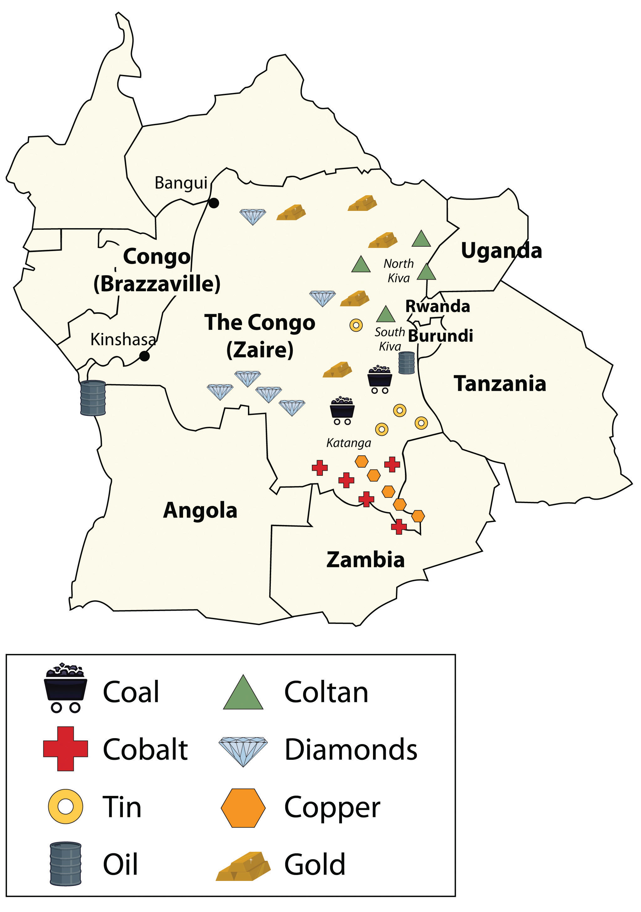This map shows the locations of major minerals in the Congo. Other minerals can also be found in the region.
Source: Updated from map courtesy of Andreas 06, http://commons.wikimedia.org/wiki/File:Blank_Map-Africa.svg.
Coltan is a mineral that tantalum comes from, which is highly prized for its use in capacitors for electronic circuits. Tantalum is found in most modern electronic devices in high demand worldwide, from video game systems to cell phones. Most of the coltan in the world comes from mines in the Congo in the eastern Kiva regions. The eastern region is also home to a high percentage of the world’s industrial diamond reserves. Other minerals and ores are also found in abundance in the region. The sale of precious gems and rare minerals can bring huge profits, but the wealth seldom reaches the hands of those that labor in the mines in the extraction process.
Learning about the geopolitics of Central Africa is critical to developing an understanding of how colonial activity gave shape to Central African countries and why multinational corporations are now highly involved in creating the demand and markets for the resources found there. The core economic regions of the world require the raw materials and resources that are extracted from peripheral places such as the Congo to fuel their economic activities and to bring profits to their shareholders. The core economic players in the global markets are also some of the largest arms manufacturers that sell weapons to the local factions involved in the battle for control of the valuable resources. Globalization connects the core to the periphery. In resource-rich places such as the Congo, this relationship is only going become more interactive.
Figure 7.34 Football in Burundi
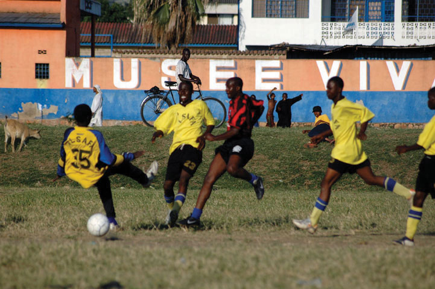A Sunday-afternoon football match takes place in Bujumbura, Burundi. The government has instituted a law that forbids any Burundians from participating in any activity that does not contribute to the communal good before 10 a.m. on a Saturday morning. Street cleaning, family events, and government tasks are examples of acceptable activities. Notice the livestock grazing on the edge of the field.
Source: Photo courtesy of Geordie Mott, http://commons.wikimedia.org/wiki/File:Le_Match.jpg.
Sports and entertainment seem to be a universal human activity. Football (American soccer) is the dominant sport in the Central African states. Football can be found in even the poorest areas. The low-cost sport is accessible to most citizens of each country. Other traditional sports include wrestling, archery, and track-and-field events. In Chad, for example, a type of freestyle wrestling in which the wrestlers wear animal hides and cover themselves with dust to prepare for the match is widely practiced. Canoe racing can be seen in Cameroon. Board games such as mancala, a count-and-capture African stone game, are also common. Western-style sports such as basketball, baseball, and cricket are played in many of the urban areas. Olympic sports are practiced in countries as skill, ability, and funding provides.
A great variety of cultural traditions spring from the thousands of ethnic groups, distinct languages, and different religious beliefs found in Africa. Cuisine and drink vary as widely as the people’s traditions and are important elements of any celebration or festivity. Every country has its own unique way of promoting and celebrating its cultural diversity. Even poor countries such as Chad possess a rich cultural heritage. Chad has opened its own Chad National Museum and the Chad Cultural Center. Rwanda, with its civil wars and ethnic divisions, still honors its holidays with ceremonies and celebrations. The people of Central Africa find time and energy to celebrate life.
Figure 7.35 African Beer
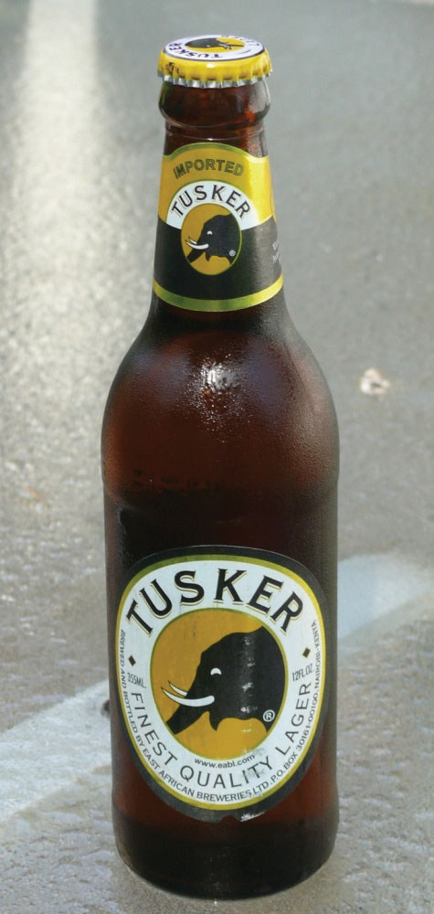Tusker is a popular African beer sold throughout the world.
Source: Photo by R. Berglee.
Food and drink differ with location, but most African countries brew some type of beer or alcoholic beverage. Ginger and honey beers are commonly brewed. Local resources, customs, and tastes determine the types of beer brewed in a particular region. In Cameroon, palm wine or millet beers are the traditional mealtime drinks. In Burundi, when close friends gather, they may drink beer from a large container, each with his or her own straw, as a symbol of unity. Popular in the Subsaharan side of Chad is a red millet beer called billi-billi. Beer brewed from white millet in Chad is called coshate. The Muslim populations in most countries do not traditionally consume alcohol, but alcoholic beverages are more common south of the African Transition Zone, where there is a mainly Christian population.
Many rural and urban women in the Central African Republic transform food crops into beverages for sale in the informal economy. Hard liquor and beer are common products that can be brewed or distilled from grains, sorghum, or other local crops. For religious reasons, some people do not drink alcoholic beverages. Juices and soft drinks are available as well as coffee and tea, which are the more traditional beverages of the region. Coffee is grown in the tropics, a climate prevalent in many of the countries in Subsaharan Africa. Coffee or tea is a major export product of almost all the Central African countries. In many areas, tea was introduced through colonial diffusion and has become not only a preferred beverage but an export product. Coffee has been the number one export product of Rwanda and Burundi for many years. Neighboring Uganda is the third-largest coffee producer in Africa after Ethiopia and Ivory Coast; all three are among the top dozen coffee producers in the world.
Figure 7.36 African Coffee
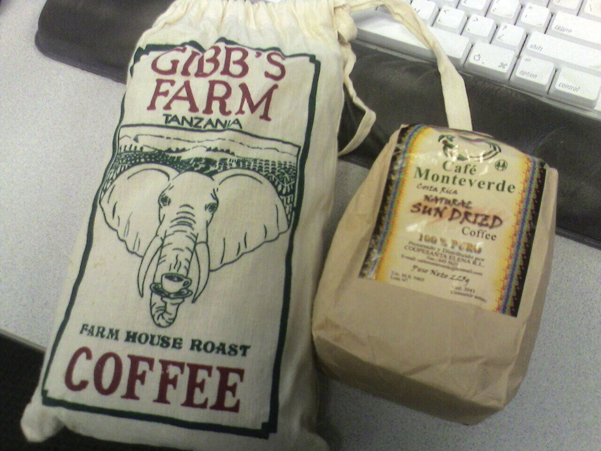Growing coffee is a major economic activity in Africa.
Source: Photo courtesy of Rex Roof, http://www.flickr.com/photos/rexroof/266242059.
The cuisines of Central Africa can be as diverse as each local population, but they have retained much of their local tastes and flavors based on available ingredients. The slave trade introduced items that are now quite common, such as chili peppers, peanuts, and cassavas. Nevertheless, food preparation is based mainly on traditional methods. Plantains and cassavas are mainstays often served with spicy sauces and grilled meat. Tomatoes, onions, and spinach are common ingredients. Root crops of yams, sweet potatoes, and maniocs are widely served. Fruits and vegetables are popular. Specialty stews are choice entrees that may contain ginger, okra, chicken, and various spices. Bambara is a favorite sugary porridge with peanuts and rice that is common in Central Africa. Traditional meats of chicken, goat, or beef are universal, but wild game such as antelope, monkey, crocodile, or whatever is available is widespread. Fish is a main protein source served with other spicy dishes or dried to be eaten later.
Women’s issues remain a concern in Central Africa regarding social equality, economic development, and population growth. The treatment of women reflects the attitudes and traditions of a society. Attitudes and traditions vary with location and with the cultural heritage of an ethnic group indigenous to a given area. Most of the Central African countries in are male dominated, a trend that can be witnessed in local activities or sports, in the construction of the government, or in the sex ratio of the business sector. With an average family size of five or more, few opportunities exist for women to break out of their traditional roles within their culture and receive a secondary education or enter a professional field of employment.
The Central African region has different types of marriages that vary from country to country. Some traditional societies still arrange their children’s marriages, but this practice is becoming less common as tradition confronts more contemporary views. Marriages between two people with different ethnic backgrounds are becoming more widespread in the urban areas. Cities are places where people with diverse backgrounds come together to live and work, which can lead to an increase in mixed marriages. Cosmopolitan areas are also more likely to have connections with outside cultures through media and communication technology and might be more tolerant of diverse traditions.
One of the marriage traditions that exists in regions of Central Africa is polygamyThe practice of a man or a woman having more than one spouse., which is the practice of a man or a woman having more than one spouse. In Africa, as in most places in the world, it is far more likely for a man to have more than one spouse than for a woman to have more than one spouse. Polygamy is practiced in areas where traditional beliefs allow it. Approximately 30 to 40 percent of women in the Central African Republic are in polygamous unions. The law sanctions polygamy as long as spouses are aware of the arrangement and agree to it before they marry. In Cameroon, both monogamous and polygamous marriages are practiced. The average family is large and extended. Monogamous relationships are the standard in Christian areas such as Burundi and in more contemporary urban societies.
Women caring for large families do not always have the opportunity to earn an education or obtain the training required for employment opportunities or professional positions. Circumstances shaped by culture, tradition, or economic necessity are not necessarily supportive of women advancing in the private or public sectors. Even if the legal code of the country does not discriminate against women, traditional practices and the social status of men often keep women from making socioeconomic strides. Many societies are male dominated, and violence against women is still common and even accepted in Central Africa.
Figure 7.37 Congo Woman Weaving
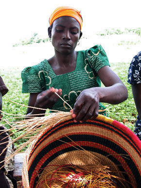Source: Photo courtesy of di bo di, http://www.flickr.com/photos/bonettodiego/314254523.
One of the worst cases of violence and discrimination against women exists in the eastern regions of the Congo, where abuse against women, including sexual violence and rape, is listed by UN humanitarian officials as the worst in the world. The civil wars in the Congo have created a difficult climate for women, often with tragic results. Violence against women has become an accepted practice in some areas. During the Congo wars, women were often raped and taken as slaves to serve the soldiers. If and when the women were released from captivity, it was not uncommon for them to commit suicide. Improvements in health care, education, and child care are needed to improve living circumstances for women and may in turn positively affect population growth in the region.
Identify the following key places on a map: